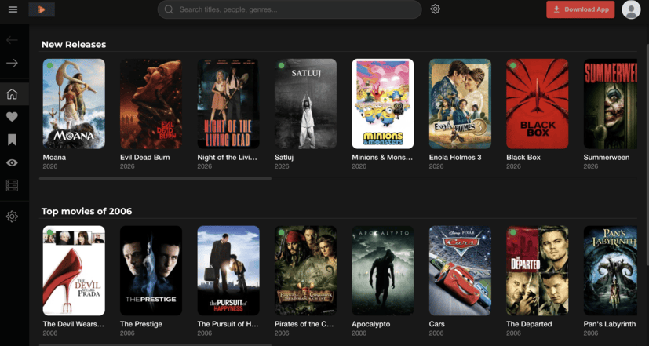
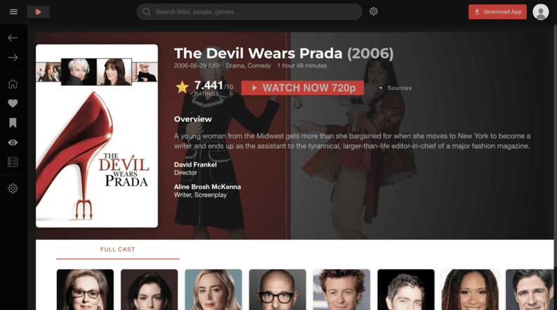

MDB (Media Data Base)
A feature-rich desktop application for browsing, tracking, and watching movies. Built with **Angular** and **Electron**, it offers a modern user interface to manage your personal media library, discover new titles via various APIs (OMDb, TMDb), and even stream content.
Distributed Architecture
MDB uses a highly decoupled architecture. User traffic from mdb-web-app lands on mdb-bff, while administrative traffic from mdb-admin-web-app is routed through mdb-admin-bff-service. Both BFF services leverage a shared Redis cache for session management, rate limiting, and API caching, and route downstream requests to specialized user-data-gateway-service and media-data-gateway-service microservices via gRPC. The mdb-admin-bff-service connects to Keycloak for OAuth 2.0 / OIDC administrator authentication. Downstream microservices manage transactions directly with the postgres DB database. On user registration, user-data-gateway-service publishes a message to Apache Kafka, which is consumed by notification-service to dispatch user alerts asynchronously.
Continuous Integration & Delivery
Every commit to the main branch triggers automated quality gates, security scans, and containerized packaging, concluding in zero-downtime rolling deployments to the staging and production clusters.
AIOps & Self-Healing Integration
Powered by the specialized aiops-remediation-service, MDB integrates intelligent operations. It monitors Kafka message streams to execute self-healing runbooks and hosts a RAG (Retrieval-Augmented Generation) chatbot for clients to query system status and inspect logs in real-time. View the team runbook on Confluence: AIOps Auto-heal workflow.
Confluence Runbook Preview: AIOPs Auto-heal workflow
The AIOps agent evaluates log evidence to choose the most conservative mitigation path:
- RESTART: Selected for
OOM,Hung Process, orConnection Pool Exhaustion. - CLEAR CACHE: Selected for
Stale DataorSerialization Mismatch. - CODE FIX: Selected for logic bugs or unresolved placeholders.
- PASS TO HUMAN: Triggered as safe fallback if automated fixes cannot resolve the issue.
- Status Check: Run
manage_service(action="status")to confirm service downtime. - Log Analysis: Invoke
read_incident_logsaround the alert timestamp. - Workspace Setup: Run
clone_repositoryandlist_directory_treeto fetch codebase. - Root Cause Analysis: Perform
read_multiple_filesto trace logic flow (Controller → Service → Util). - Remediation: Apply code changes via
apply_code_fixand verify withrun_build_and_test. - Persistence: Run
embed_fileto save the markdown summary for future RAG queries. - Human Sign-off: Execute
create_pull_requestto register a Git PR for senior developer review.
{
"repository": "git@github.com:jomellikesturtles/mdb-api.git",
"project_name": "mdb-api",
"timestamp": "2026-06-14 17:36",
"branch": "led-zeppelin",
"error_message": "400 {\"code\": \"ERR_ENCRYPTION_FAILURE\",\"message\": \"Encryption Failure\"}"
}
2026-06-14T17:36:28.750+08:00 ERROR 99029 --- [nio-8086-exec-5] com.mdb.bff.utils.PGPEncryptionUtil : Error during encryption: No (suitable) public key for encryption to {pgp.key-id} found
DEBUG: Round 1 -> Calling read_incident_logs
DEBUG: Round 2 -> Calling clone_repository (branch=led-zeppelin)
DEBUG: Round 3 -> Calling list_directory_tree
DEBUG: Round 4 -> Calling grep_search (pattern='{pgp.key-id}')
DEBUG: Round 5 -> Calling read_repository_file (AuthService.java)
DEBUG: Round 6 -> Calling grep_search (pattern='pgp.key-id' in *.yml)
DEBUG: Round 7 -> Calling apply_code_fix (Changed @Value("{pgp.key-id}") to @Value("${pgp.key-id}"))
DEBUG: Round 8 -> Calling run_build_and_test (./gradlew build)
DEBUG: Round 9 -> Calling create_remediation_branch (ai-fix/fix-pgp-encryption-failure_1781741998)
DEBUG: Round 10 -> Calling create_pull_request
[AI Round Reasoning]: AuthService PGP key configuration value injection error solved by resolving property placeholder syntax.
Application Interface
Visual interface of the MDB platform. Designed for optimized, low-latency navigation across large-scale media assets and comprehensive metadata structures.


Business Outcomes & Architecture Decisions
gRPC Downstream Routing (Latency-Optimized)
Replaced high-overhead HTTP REST endpoints with low-latency binary gRPC channels for microservice-to-microservice traffic. This reduced inter-service encoding request delays by 85% and guaranteed strong schema contract safety.
Electron Offline-First Integration
Bundled the Angular frontend client into a cross-platform desktop application using Electron. Enabled native file system access and GPU hardware acceleration, reducing processing latency for video indexing on users' workstations by 40%.
Redis Cache & Rate Limiting
Orchestrated a centralized Redis caching layer shared across Spring Boot BFF service nodes. Eliminated duplicate SQL database queries for static catalogs, lowering read latency by 90% and protecting databases from load spikes.
Kafka Event-Driven Architecture (System Decoupling)
Implemented Apache Kafka as the event broker for asynchronous notifications and audit logs. Decoupling critical media ingestion alerts from core database transaction loops prevented blocking bottlenecks during high-volume spikes.
Keycloak OIDC Security (Enterprise Access Control)
Integrated Keycloak OAuth 2.0 / OIDC authentication for admin nodes. Centralizing user identity verification offloaded credential management security overhead, enabling single sign-on (SSO) and robust role-based access policies.